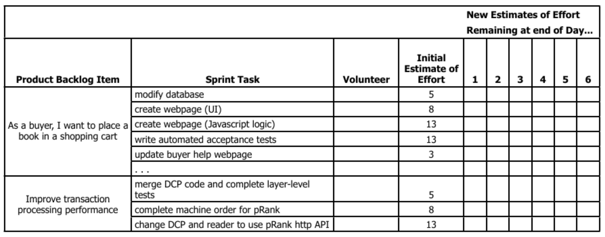

Introduction to agile and DevOps
Software Engineering
(for Intelligent Distributed Systems)
Module “Principles and Methods”
A.Y. 2023/2024
Giovanni Ciatto (reusing material made by Danilo Pianini)
Compiled on: 2024-02-17 — printable version
Development
- Analysis of a domain
- Design of a solution
- Implementation
- Testing
Operations
- IT infrastructure
- Deployment
- Maintenance
Silo mentality

No silos

DevOps culture
-
Increased collaboration
- Dev and Ops should exchange information and work together
-
Shared responsibility
- A team is responsible for the (sub) product for its whole lifetime
- No handing over projects from devs to ops
-
Autonomous teams
- Lightweight decision making process
-
Focus on the process, not just the product
- Promote small, incremental changes
- Automate as much as possible
- Leverage the right tool for the job at hand
Why bother?
-
Risk management
- Reduce the probability of failure
- Detect defects before hitting the market
- Quickly react to problems
-
Resource exploitation
- Use human resources for human-y work
- Reduce time to market
- Embrace innovation
- Exploit emerging technologies
DevOps
- Principles
- Practices
- Tools
Principles inspire practices
Practices require tools
DevOps principles
(not exhaustive)
- Collaboration
- Reproducibility
- Automation
- Incrementality
- Robustness
DevOps practices
- Workflow organization
- Build automation
- Self-testing code
- Code quality control
- Continuous Integration
- Continuous Delivery
- Continuous Deployment
- Continuous Monitoring
A real-world test case
We applied DevOps (and microservice-ification) to an existing software project, measuring some metrics before and after the operation.
- The detailed experience report has been presented at the 37th International Conference on Software Maintenance and Evolution (ICSME 2021)
The target
Maggioli S.p.A
- Multinational, based in Italy
- ~2000 collaborators at the time of writing
- An internal IT/Operations team
- Our target team was composed of five people
sisred (before intervention)
- Client-server stand-alone application
- Delphi front-end, Microsoft SQL Server backend
- Editors (paid by Maggioli) are experts in law entering information on the client
- The information is then exposed into a (paid access) portal with up-to-date legal information
Previous architecture

| Metric | Prev. | Now | Change |
|---|---|---|---|
| Release frequency ($\frac{releases}{day}$) | 0.071 | ||
| Commit to release time (hours) | 8 to 24 | ||
| Commits per day ($\frac{commits}{day}$) | 2 | ||
| MTTR (hours) | 36 | ||
| Prod. env. setup (working hours) | 16 | ||
| Dev. env. setup (minutes) | 120 | ||
| Nightly downtime ($\frac{minutes}{night}$) | 30 | ||
| Support ticket frequency ($\frac{tickets}{month}$) | 40 | ||
| Issue resolution time (days) | 4 |
Microservice-ified architecture

CI Pipeline

| Metric | Prev. | Now | Change |
|---|---|---|---|
| Release frequency ($\frac{releases}{day}$) | 0.071 | ||
| Commit to release time (hours) | 8 to 24 | ||
| Commits per day ($\frac{commits}{day}$) | 2 | ||
| MTTR (hours) | 36 | ||
| Prod. env. setup (working hours) | 16 | ||
| Dev. env. setup (minutes) | 120 | ||
| Nightly downtime ($\frac{minutes}{night}$) | 30 | ||
| Support ticket frequency ($\frac{tickets}{month}$) | 40 | ||
| Issue resolution time (days) | 4 |
| Metric | Prev. | Now | Change |
|---|---|---|---|
| Release frequency ($\frac{releases}{day}$) | 0.071 | 2.7 | +3700% |
| Commit to release time (hours) | 8 to 24 | ||
| Commits per day ($\frac{commits}{day}$) | 2 | ||
| MTTR (hours) | 36 | ||
| Prod. env. setup (working hours) | 16 | ||
| Dev. env. setup (minutes) | 120 | ||
| Nightly downtime ($\frac{minutes}{night}$) | 30 | ||
| Support ticket frequency ($\frac{tickets}{month}$) | 40 | ||
| Issue resolution time (days) | 4 |
| Metric | Prev. | Now | Change |
|---|---|---|---|
| Release frequency ($\frac{releases}{day}$) | 0.071 | 2.7 | +3700% |
| Commit to release time (hours) | 8 to 24 | 0.19 | ~ -98.5% |
| Commits per day ($\frac{commits}{day}$) | 2 | ||
| MTTR (hours) | 36 | ||
| Prod. env. setup (working hours) | 16 | ||
| Dev. env. setup (minutes) | 120 | ||
| Nightly downtime ($\frac{minutes}{night}$) | 30 | ||
| Support ticket frequency ($\frac{tickets}{month}$) | 40 | ||
| Issue resolution time (days) | 4 |
| Metric | Prev. | Now | Change |
|---|---|---|---|
| Release frequency ($\frac{releases}{day}$) | 0.071 | 2.7 | +3700% |
| Commit to release time (hours) | 8 to 24 | 0.19 | ~ -98.5% |
| Commits per day ($\frac{commits}{day}$) | 2 | 7.1 | +255% |
| MTTR (hours) | 36 | ||
| Prod. env. setup (working hours) | 16 | ||
| Dev. env. setup (minutes) | 120 | ||
| Nightly downtime ($\frac{minutes}{night}$) | 30 | ||
| Support ticket frequency ($\frac{tickets}{month}$) | 40 | ||
| Issue resolution time (days) | 4 |
| Metric | Prev. | Now | Change |
|---|---|---|---|
| Release frequency ($\frac{releases}{day}$) | 0.071 | 2.7 | +3700% |
| Commit to release time (hours) | 8 to 24 | 0.19 | ~ -98.5% |
| Commits per day ($\frac{commits}{day}$) | 2 | 7.1 | +255% |
| MTTR (hours) | 36 | 0.5 | -98.6% |
| Prod. env. setup (working hours) | 16 | ||
| Dev. env. setup (minutes) | 120 | ||
| Nightly downtime ($\frac{minutes}{night}$) | 30 | ||
| Support ticket frequency ($\frac{tickets}{month}$) | 40 | ||
| Issue resolution time (days) | 4 |
| Metric | Prev. | Now | Change |
|---|---|---|---|
| Release frequency ($\frac{releases}{day}$) | 0.071 | 2.7 | +3700% |
| Commit to release time (hours) | 8 to 24 | 0.19 | ~ -98.5% |
| Commits per day ($\frac{commits}{day}$) | 2 | 7.1 | +255% |
| MTTR (hours) | 36 | 0.5 | -98.6% |
| Prod. env. setup (working hours) | 16 | 0.35 | -97.8% |
| Dev. env. setup (minutes) | 120 | ||
| Nightly downtime ($\frac{minutes}{night}$) | 30 | ||
| Support ticket frequency ($\frac{tickets}{month}$) | 40 | ||
| Issue resolution time (days) | 4 |
| Metric | Prev. | Now | Change |
|---|---|---|---|
| Release frequency ($\frac{releases}{day}$) | 0.071 | 2.7 | +3700% |
| Commit to release time (hours) | 8 to 24 | 0.19 | ~ -98.5% |
| Commits per day ($\frac{commits}{day}$) | 2 | 7.1 | +255% |
| MTTR (hours) | 36 | 0.5 | -98.6% |
| Prod. env. setup (working hours) | 16 | 0.35 | -97.8% |
| Dev. env. setup (minutes) | 120 | 9 | -92.5% |
| Nightly downtime ($\frac{minutes}{night}$) | 30 | ||
| Support ticket frequency ($\frac{tickets}{month}$) | 40 | ||
| Issue resolution time (days) | 4 |
| Metric | Prev. | Now | Change |
|---|---|---|---|
| Release frequency ($\frac{releases}{day}$) | 0.071 | 2.7 | +3700% |
| Commit to release time (hours) | 8 to 24 | 0.19 | ~ -98.5% |
| Commits per day ($\frac{commits}{day}$) | 2 | 7.1 | +255% |
| MTTR (hours) | 36 | 0.5 | -98.6% |
| Prod. env. setup (working hours) | 16 | 0.35 | -97.8% |
| Dev. env. setup (minutes) | 120 | 9 | -92.5% |
| Nightly downtime ($\frac{minutes}{night}$) | 30 | 0 | -100% |
| Support ticket frequency ($\frac{tickets}{month}$) | 40 | ||
| Issue resolution time (days) | 4 |
| Metric | Prev. | Now | Change |
|---|---|---|---|
| Release frequency ($\frac{releases}{day}$) | 0.071 | 2.7 | +3700% |
| Commit to release time (hours) | 8 to 24 | 0.19 | ~ -98.5% |
| Commits per day ($\frac{commits}{day}$) | 2 | 7.1 | +255% |
| MTTR (hours) | 36 | 0.5 | -98.6% |
| Prod. env. setup (working hours) | 16 | 0.35 | -97.8% |
| Dev. env. setup (minutes) | 120 | 9 | -92.5% |
| Nightly downtime ($\frac{minutes}{night}$) | 30 | 0 | -100% |
| Support ticket frequency ($\frac{tickets}{month}$) | 40 | 19 | -52.5% |
| Issue resolution time (days) | 4 |
| Metric | Prev. | Now | Change |
|---|---|---|---|
| Release frequency ($\frac{releases}{day}$) | 0.071 | 2.7 | +3700% |
| Commit to release time (hours) | 8 to 24 | 0.19 | ~ -98.5% |
| Commits per day ($\frac{commits}{day}$) | 2 | 7.1 | +255% |
| MTTR (hours) | 36 | 0.5 | -98.6% |
| Prod. env. setup (working hours) | 16 | 0.35 | -97.8% |
| Dev. env. setup (minutes) | 120 | 9 | -92.5% |
| Nightly downtime ($\frac{minutes}{night}$) | 30 | 0 | -100% |
| Support ticket frequency ($\frac{tickets}{month}$) | 40 | 19 | -52.5% |
| Issue resolution time (days) | 4 | 3 | -25% |
Benefits
- Much less maintenance in the traditional meaning: “Time spent to keep the system in nominal conditions”
- No more issues with Windows updates
- No more downtimes related to internal network / electricity / public infrastructure maintenance
- Improved security
- No more critical failures caused by testing stored procedures directly in production by mistake
- Much more maintenance in terms of software evolution
- Application (or verification of automatic application) of updates
- Security audits
- Maintenance and update of the pipeline
Lessons learned
- The teams must be autonomous
- Practices must be tailored to the team
- Time-consuming, repetitive, and cumbersome procedures must be automated
- Obsolete practices must be removed
- Communication is key, awareness must be shed across the team of the expected benefits
Timeline

Agile software development
Manifesto
We are uncovering better ways of developing software by doing it and helping others do it. Through this work we have come to value:
- Individuals and interactions over processes and tools
- Working software over comprehensive documentation
- Customer collaboration over contract negotiation
- Responding to change over following a plan
That is, while there is value in the items on the right, we value the items on the left more.
Agile Principles I
(emphasis mine) (comments mine)
-
Our highest priority is to satisfy the customer through early and continuous delivery of valuable software.
-
Welcome changing requirements, even late in development. Agile processes harness change for the customer’s competitive advantage. (Not an excuse for not collecting requirements upfront)
-
Deliver working software frequently, from a couple of weeks to a couple of months, with a preference to the shorter timescale. (Daily, hourly)
-
Business people and developers must work together daily throughout the project. (And understand each other!)
-
Build projects around motivated individuals. Give them the environment and support they need, and trust them to get the job done. (Teams must be independent)
-
The most efficient and effective method of conveying information to and within a development team is face-to-face conversation. (Yes, it is pre-covid stuff)
Agile Principles II
(emphasis mine) (comments mine)
-
Working software is the primary measure of progress. (But if used as the only measure progress, progress will halt soon)
-
Agile processes promote sustainable development. The sponsors, developers, and users should be able to maintain a constant pace indefinitely. (Bureaucracy and maintenance task should not pile up)
-
Continuous attention to technical excellence and good design enhances agility. (First, do it well)
-
Simplicity–the art of maximizing the amount of work not done–is essential. (Also known as KISS)
-
The best architectures, requirements, and designs emerge from self-organizing teams.
-
At regular intervals, the team reflects on how to become more effective, then tunes and adjusts its behavior accordingly. (Or, maybe, continuously…)
Practices vs. Frameworks
Principles get reified into practices
Practices get often interpreted and formalized into frameworks
Framework are actionable, but formalization may introduce assumptions about projects and teams that do not hold always!
Agile principles and practices get often captured into these well-known frameworks, with slightly different focuses and goals:
- Scrum: focus on team structure, roles, responsibilities, procedures
- Kanban: focus on tasks, streamlining, bottleneck mitigation
- XP (Extreme Programming): focus on release frequency
- Feature Driven Development: focus on clients’ requests and satisfaction
- Crystal: focus on self-management of teams
- DSDM (Dynamic Systems Development Method): focus on time and budget constraints
Scrum
Seminal paper from 1986 by Hirotaka Takeuchi and Ikujiro Nonaka:
Then refined to the current framework. The name is from Rugby’s “scrummage”

Scrum key ideas
- Requirements are volatile
- There will be unpredictability along the road
- Accept that the problem may not be fully understood upfront, and focus on quick response to unexpected changes
Scrum workflow
- The development is divided in Sprints
- A Sprint is timeboxed: the length is agreed in advance
- The most commonly adopted length is two weeks
- A Sprint must end with a deliverable advancement
- Each sprint is macro-structured as follows:
- Planning: define the activities of the sprint
- Daily scrums (aka “stand-up meetings”): daily updates on the state of work
- Sprint review: at the of the sprint, present the work to the stakeholders
- At regular intervals a Sprint retrospective is held
- Reason on the past sprints with the goal of continuous improvement
Scrum roles
-
Product owner (PO), Goal: maximimizing ROI
- Tasks: identify the necessary features and prioritize them
- Vision: strategic, similar to a product manager, but understands the product development!
- Interactions: customers, development team, SM
- Responsibilities: coarse-grained, high-level decision on product directions
-
Development team, Goal: make things happen
- Tasks: build the selected features, provide time estimates, provide feedback to the PO
- Vision: tactic, cross-functional (T-shaped, the team can deal with all the aspects of a sub-project)
- Interactions: PO and SM
- Responsibilities: fine-grained, autonomous and hence accountable
-
Scrum master (SM), Goal: coaching and supervision
- Tasks: explain Scrum, supervise its application, help learning the methodology
- Vision: process-oriented, expert in Scrum
- Interactions: PO and development team
- Responsibilities: help the team understand and apply Scrum, no formal responsibility on the product. Optional (if the team is already experienced), often externalized.
Scrum tools
- Product backlog
- A prioritized list of customer-driven features
- Maintained and sorted by the PO
- Each item has an associated size estimation (in arbitrary measure)
- Refined at the conclusion of each sprint
- Sprint backlog
- Refines the product backlog
- Each product backlog item selected for the current sprint gets split into sprint tasks
- Each task has an effort estimation, an assignee, and a progress tracker
- The progress is often tracked by updating the “remaining effort” day by day
- The burn-down chart is a common way to visualize it
Product backlog

Sprint backlog


Key concept: the definition of done
Apparently simple concept that is central for Scrum to work
(and for many other workflows)
Every actor in the process must agree and what is the meaning of a task being considered done
- Is it done when the acceptance tests work?
- Is it done when the assignee marks it as so?
- Is it done when it is delivered to the main application?
- Is it done when it has been in production for at least one week without bug reports?
Process overview

Workflow overview

Pull mode: Kanban
- Timeboxing in SCRUM resembles a push mechanism
- Work is allocated to the team to be performed within a timebox
- Some activities may benefit of a pull mechanism
- Resources are allocated on a per-need basis
- The two modes can (should) cohexist in a sane agile workflow
Based on the concept of a board (Kanban is Japanese for “board”) divided in columns where cards can be moved, specifically:
- Columns represent the different stages of the workflow
- Cards represent the tasks to be performed
- Cards’ color and/or shape can be used to classify them (e.g., priority, type of work, reference project, etc.)
- The cards are moved from column to column as they progress, in real time
- The board can be virtual or physical
- Personally, I prefer physical boards, but it’s a matter of taste
Simple Kanban board

Kanban board for an articulated workflow

Scrum + Kanban = Scrumban

(Scrumban actually exists)
Base ideas:
- Scrum for the planning and sprint management
- Kanban for the continuous flow of work
The problem with Scrum
Scrum and agile are often used as synonyms, but they are not
In the literature, Scrum and agile show mixed evidence of efficacy
(even though, anecdotically, many success stories can be found)
WARNING: opinions!
- From now on, facts are mixed with opinions of practitioners (included myself)
- There will be citations. Please note: many authors of these quotes, although regarded professionals, often use agile and Scrum interchangeably
- We are going to ask ourselves to what doesn’t work, when, and why
- Let’s see if we can find some general guidance…
Waterfall replicates the social model of a dysfunctional organization with a defined hierarchy. Agile, quite often, replicates the social model of a dysfunctional organization without a well-defined hierarchy.
- Michael O. Church: Why “Agile” and especially Scrum are terrible
If your team has combined agile with a legacy methodology such as waterfall, creating a ‘water-scrum’ approach, you may have the worst of both worlds: You have combined the rigid structure of the traditional approach with the terminology of agile.
- Peter Varhol: 8 reasons to ditch agile
Many practice the terminology without appreciating the underlying values.
- Peter Varhol: 8 reasons to ditch agile
I knew the end of Agile was coming when we started using hockey sticks.
- Kurt Cagle on Forbes: The End of Agile
If management is essentially ignoring the developers, there are fixed deadlines to be achieved with a predefined scope, or it’s a dog-eat-dog environment instead of a team focused on achieving the same goal, if planning ahead and thinking out of the box are not appreciated, then yes, eventually you’ll give up and resort to just doing the assigned tasks. I’ve been there.
- From StackOverflow
Standup is effectively “update management”. The notion that standup is for developers is absurd. Does anyone actually wait until 9AM to report a problem or are they going to just ask in the group chat immediately? In practice, it is someone higher up the food chain keeping tabs on how fast things are moving so they can ask about it later in the day.
- Matthew Gaiser on StackOverflow
it usually bends and breaks every other process to it and becomes this overarching process where you do nothing consistently except Scrum rituals and making those Scrum rituals seem successful
- Matthew Gaiser on StackOverflow
What is the root of these issues?
Bureaucratization
- There is a very delicate trade-off between standardization of practices and excess of buraucracy
- Agile is designed around co-located medium/small teams and low buraucracy (compared to the state of the art at the time)
- Larger scale requires more coordination and buraucracy
- Smaller scale benefits of less buraucracy
There is no workflow that “fits-them-all”!
Blindly adopting a pre-existing set of practices may lead to failures
Mixing cherry-picked parts of workflows requires a great deal of experience
- It is paramount that everyone understands why some procedure is in place
It’s stupidly, dangerously short-term.
- Michael O. Church: Why “Agile” and especially Scrum are terrible
Two-week delivery schedules are overkill
- Peter Varhol: 8 reasons to ditch agile
What is the root of these issues?
Time boxes
-
Estimating the effort is a good practice.
-
Replacing reality with estimations is not.
-
High-risk/high-gain activities hardly fit into time slots
- (hence the “dangerously short-term”)
Great developers are often sought out for advice and for second opinions. But any time doing that is less time spent churning out tickets, so their velocity falls.
- Matthew Gaiser on StackOverflow
Scrum and infinite defects can be good friends because the infinite defects approach lets velocity be artificially high as long as bugs are found after the sprint and therefore counted as new work. You could have an ever higher velocity by constantly generating new bugs.
- Matthew Gaiser on StackOverflow
Because the developers are independently working away on each ticket sequentially, the architecture rapidly begins to mirror the tickets. The tickets are typically 1-2 sentence user stories. Ticket driven architecture rapidly gets messy simply because more code gets piled on as required.
- Matthew Gaiser on StackOverflow
What is the root of these issues?
Abuse of KPIs
- Measuring is good and must be done
- But keep in mind that measures show a view over a complex system
- Blindly using metrics to measure quality can be perilous
I call this the Whisky Goggles Effect: it turns the 3s and 4s into 5s, but it makes you so sloppy that the 7s and 9s want nothing to do with you. Unable to get their creative juices flowing under a system where everything has to be justified in terms of short-term business value, the best programmers leave.
- Michael O. Church: Why “Agile” and especially Scrum are terrible
[Emphasis mine]
Culturally, agile may threaten some team members, including those who feel they had obtained an informal leadership status under the previous process that disappeared under agile.
- Peter Varhol: 8 reasons to ditch agile
developers who think they are under pressure will do a crappy job in any development methodology
- From StackOverflow
Great developers are usually defined as those who can solve tough problems. Scrum encourages picking work that can easily be done and rapidly churned out at a steady pace. A tough problem is a developer being slow on getting the tickets done.
- Matthew Gaiser on StackOverflow
Teams might self organize if they all have the same goal and incentives. The problem is, that is rarely true. One guy wants a promotion. Another is studying for a degree on the side. A third is upskilling to go to another company. Another just doesn’t want to have arguments so agrees to anything and lets the codebase become a mess. A lot of good design requires the developers to sit down and hash out how a thing should work.
- Matthew Gaiser on StackOverflow
Even if you get a situation where you are not formally judged on the points completed (which will not happen if management is mostly interacting during Scrum rituals as that is all they have to see regarding progress), people are still going to compete for attention and rewards.
- Matthew Gaiser on StackOverflow
Just imagine 11 people being handed a soccer manual and being told practice is every day for fifteen minutes around 10 AM in conference room #5. Do you think that is what makes a good soccer team? But what if those 11 people were really good, professional players? Still no team? No. Even Christiano Ronaldo would be getting “average” sooner or later with that kind of “team”. But that’s not soccer’s fault. It’s just not how you build a team.
- Matthew Gaiser on StackOverflow
What is the root of these issues?
Managing teams is hard
agile alone does not make it easier
- Daily standups may become source of pressure
- especially if management is involved
- autonomy requires trust!
- Changes in consolidated practices have hidden costs
- they challenge a pre-existent stabiity
- and I have no idea how to deal with them
- (well you tell me)
opinion warning below
- Developer quality is not linear
- One insanely good developer can be worth 5 good developers alone
- still they don’t get paid five times as much, and they know it
- One good developer can be worth 5 average developers, and so on
- $\Rightarrow$ flattening towards average is usually damaging
Many practice the terminology without appreciating the underlying values.
- Peter Varhol: 8 reasons to ditch agile
If you really don’t have an agile methodology but call it agile to attract and retain developers and other team members, you are in trouble.
- Peter Varhol: 8 reasons to ditch agile
What is the root of these issues?
Find solid processes, not just a nice packaging
- It is easy to transform agile principles into a set of rituals
- See bureaucratization
- Don’t do Scrum because is cool, do it because:
- you understand it
- you have good reasons to think it will help
- Don’t be fearful of adapting it to the environment
In Scrum, you need to clear tickets and there is no real check on the quality of the work as “done” or “not done” is decided by a usually non-technical project owner. That incentivizes going into a void and focusing on outputting code.
- Matthew Gaiser on StackOverflow
The high level of developer independence means each developer takes different approaches. […] While it is not necessarily wrong, it makes debugging a heck of a lot harder as more places need to be checked.
- Matthew Gaiser on StackOverflow
What is the root of these issues?
Technical excellence
- Working in a persistent emergency state creates technical debt
- Architectures and abstractions are vital for long-term success
- If they get compromised, they need to be recovered
- (which is paying your techical debt)
- There should be consistency across styles and techniques
- And controls should be as much as possible automatic
Knowledge gaps and definition of done
- The definition of done is central
- Arguably, it should include the technical debt
- Involve technical experts when defining what done means
- Especially if you intend to measure people performance based on how much they have done
Doing it right
- Know your project, there is no universal process that works every time
- Know your team, there is no universal recipe that works everywhere
- Avoid ritualization! Processes are not religions
- Agree on the definition of done
- Break down problems in smaller chunks, but do not foget the long-term vision
- Sacrify excellence for velocity only when there is an emergency
- When in “emergency mode”, be aware that you are accumulating technical debt that must be paid
- Avoid shortcuts that break abstractions and architectures
- Enforce excellence by strict QA processes
- Beware of scoring individuals, as they will likely begin to chase the metrics in response
- Development is a creative work, excessive management pressure is likely to make things worse